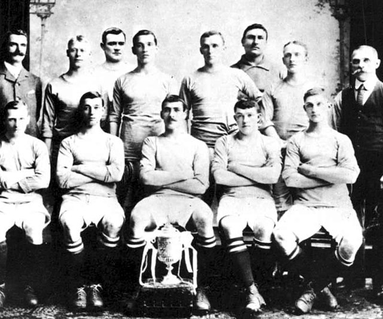

 Manchester City Football Club is a football club in Manchester, England. Founded in 1880 as St. Mark's (West Garton), it became Ardwick Association Football Club in 1887 and Manchester City in 1894. The club's home ground is the City of Manchester Stadiumin east Manchester, to which it movedin 2003.
Manchester City first played in the top-tier of the FootballLeague in 1899 and won their first major honour with the FA Cup in 1904. The clubs's most successful period was from 1968 to 1970, when it won the league Championship, FA Cup, leagueCup and European Cup, u nder the management team of Joe Mercer and Malcom Allison. After losing the 1981 FA cup Final, the club went through a periodof decline, culminating in relegation to the third tier of English football for the only time in its histroy in 1998. Having regained their Premier league status in the early 2000s, Manchester City was purchased in 2008 by Abu Dhabi aaunited Group for £ 210 million, receiving considerable investment. The club went on to win the Premier leaguein 2012, 2014, and 2018.
Manchester City has the fifth-highest revenue in football, at EUR527.7 million in 2016-17. Forbes magazine ranks it as the world's fifth-most valuable football club, worth US$2.08 billion. In 2015, a 13.79% stake purchase of the club's parent company, City Football Group (CFG), by the Citic Group for £265 million valued it at $3 billion.
City gained their first honours by winning the Second Divion in 1899; with it came promotion to the
highest level in English football, the First Division. They went on to claim their first major honour on 23 April 1904, beating
Bolton Wanderers 1-0 at Crystal PAlace to win the FA Cup; City narrowly missed out on a League and Cup double that season after
finishing running runners-up in the League but City became the first club in the League but City became the first club in Manchester
to win a major honour. In the seasons following the FA Cup triumph, the club was dogged byby allegations of financial irregularities,
culminating in the suspension of seventeen Players in 1906,
including captain Billy Meredith, who susbsequently moved across town to
Manchester United. A fire at Hyde Road destroyd the
main stand in 1920 and in 1923 the club moved to their new
purpose-built Stadium at
Maine Road in Moss Side.
In the 1930s, Manchester City reached two consecutive FA Cup finals, losing to Everton in 1933, before claiming the Cup by beating Portsmount in 1934 cup run, ManchesterCity broke the record for the highest home attendance of any club in English football histroy, as 84,569 fans packed Maine Road for a sixth round FA Cup tie against Stoke City in 1934 - a recordwhich still stand to this day. The club won the first Division title for the first time in 1937, but were relegated the following season, depite scoring more goals than any other team in the division. Twenty years later, a City team inspired by a tactical system known as the Revie Plan reached consecutive FA Cup finals again, in 1955 and 1956; just as in 1930s, they lost the first one, to Newcastle United,and won the second. The 1956 final, in which Manchester City beat Birmingham City 3-1, is one of the most famost famous finals of all-time, and is remembered for City goalkeeper Bert Trautmuann continuing to play on after unknowingly breaking neck.
After relegation to the second Divion in 1963, the future looked bleaked with a record low home attendanceof 8,015 against swindon Town in January 1965. In the summer of 1965, the management team of the Joe Mercer and Malcom Allison was appointed. In the fist season under Mercer, City won the Second Divion title and made important signings in Mikeke Summerbee and Colin Bell. TWO seasons later,in 1967-68, Manchester City claimed the league Championshipfor the second time, clinching the title on the final dayof the season time with a 4-3 win at NewCastle Unitedand beating their close neighbours Manchester United into second place. Further Trophiesfollowed: City won the FA Cup in 1969, before achieving European success by wwinning the European Cup winners's Cup in 1970, beating Gornik Zabrze 2-1 in Vienna. City also won the league Cup that season, becoming the second English team to win a Europeantropy and a domestic trophy in the season.
The club continued to challenge for honours throughout 1970s, finishing one points behind the league champions on two occasions and reaching the final of the 1974 league cup. One of the matches from this period that is mostly fondly remembered by suporters of Manchester City is the final match of 1973-74 season against approvals Manchester United, who needed to win to have any hope of avoiding relegation. Formal United Danis Law scored with a back hero to give City a 1-0 win at Old Trafford and confirm the relegation of their rivals. Final Trophy of the clubs most successful period was won in 1976, when NewCastle United were beaten 2-1 in the league Cup final.
A long period of decline followed tghe successof the 1960s and 1970s. Malcon Allison joined the club tobecome manager for the scond time in 1979, butb squandered large sums of money on unsuccessfull signings, such as Steve Daily. A succsion of managersthen followed-seven in the 1970s alone. Under John Bond, City reached in the 1981 FA Cup final but lost in the repay to Tottenham Hortspur. The club were twice relegatedfrom the trop flight in th 1980s (1983 and 1987), but returned to the top flight again in 1989 and finished fith in 1991 and 1992 under management of Peter Reid. However, this was only a temperary respite, and following Reid departure Manchester Cities fortunes continues to faild. City were co founders of the premier league upon its creation on 1992,but after finishing ninty in it first season they endured three seasons of struggled to before relegated in 1996. After two seasons in Division one, City felt the lowest point in their history, becoming the second ever European Trophy winers to be relegated to tier countries first league tier, after 1.fc Mgdeburg of Germany